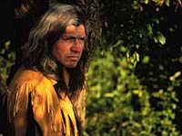

Berry picking for individual use has
always been part of the prairie and northern lifestyle. The new
ventures in northern Saskatchewan to pick, collect and market
the blueberries and low bush cranberries growing there are providing
opportunities for more economic independence for Saskatchewan
Indian and Metis peoples.
Through the efforts of innovative producers,
backed by research and investigation, some of these crops and
some of the alternative crops have recently been added to the
list of Saskatchewan farm products, like raspberries.
|